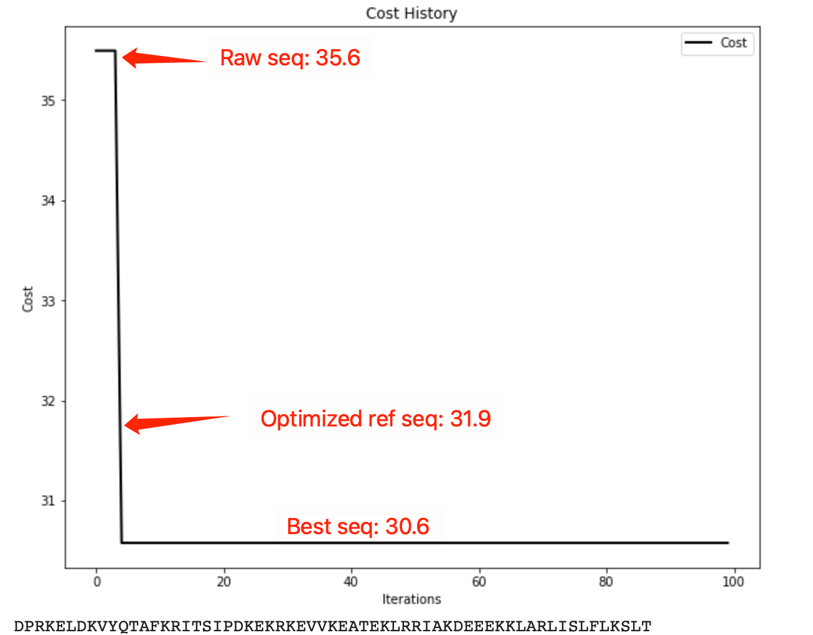

To show the feasibility of Peplib Generator, we take Chain A of Fibroblast growth factor receptor 24 as an example target to find anti-fibrosis peptide drug. The whole pipeline is displayed in Fig.2. Whole work can be done with Nvidia Tesla P100 in only 9 hours. Using a more powerful GPU like Nvidia A100 can cut hours of computation to 4.
Motifs are strings of continuous amino acids (usually 7-16 aa). Evolving from entirely random amino acids into a stable binder is unlikely to be done. Therefore, several motifs are generated in the pocket as seeds for the peptide. 4 PDB ID: FGFR2 Motifs are expected to be placed in hydrophobic grooves with flat pocket[21] by the algorithm. Therefore, protein with a globular shape, hydrophilic surface or narrow pocket is nearly impossible to get any motif. It takes about 30 iterations (30-40 minutes) to generate a stable motif right in the pocket.
With a motif as a seed as well as a constrain, a stable binder is more likely to be generated. To generate de novo structure ligand, amino acids are randomly positioned on the rest indexes of binder except the fixed motif. Peplib Generator only prevent binder from folding into irregular curls. However, without much gradient to guide evolution , sequence space is full of alpha-helixes. Motif growth cannot be processed one amino acid by one, for it will only result in one long alpha-helix. To avoid that, a binder with at least 40-70 amino acids is expected. Scaffold guided evolution is another way towards stable folded binder. Yet it cannot make new structure to be find as we believe that each target awaits its only best partner peptide that cannot be simply copied and edited from scaffold library. Nevertheless this leads to a faster way as screening whole scaffold library and graft it in pockets with motif. So we are developing scaffold guided binder growth based on computer generated mini protein scaffold library from David Baker lab. It costs about 4-5 hours (the longer the better) to generate a raw binder.
Site saturation mutagenesis is widely considered as best way to enhance peptide ligand affinity and stability. However, such processes take up to 2 months in real experiments , even with the high-throughput yeast surface display. Peplib Generator works totally fine in this step as it takes only 6-hour computation and less than $1 electricity fees. And it even got better results than experiment ones in our test, which can be displayed in Supplementary. Comparing with unpublished but authorized data from Cao, we reappearanced peptide binder sequence evolution in Fig.3.
Figure 3. Convergence curve of binder optimization
Fitness of raw sequence and optimized referenced sequence are counted in Gradient Network (the lower the better), so is the last best sequence optimized by Peplib Generator.